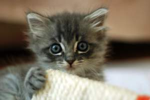

Recent Kitty Cats

Black & White Kitty
June 8, 2016
Location: The Wood Shed
This picture of the cat was taken out by the wood shed. Look at his fuzzy face! He looks so cool and artsy in black and white, but still so cute!

Kitten on the Counter
June 3, 2016
Location: My Bathroom
He's striped! Look at his little pink nose, it's so cute! And the whiskers! D'awww... Don't you wanna just scratch behind his little ears?

Feline for You
May 30, 2016
Location: My Bathroom
I didn't even know kittens could have blue eyes! He's fuzzier than usual, and is just a little baby!